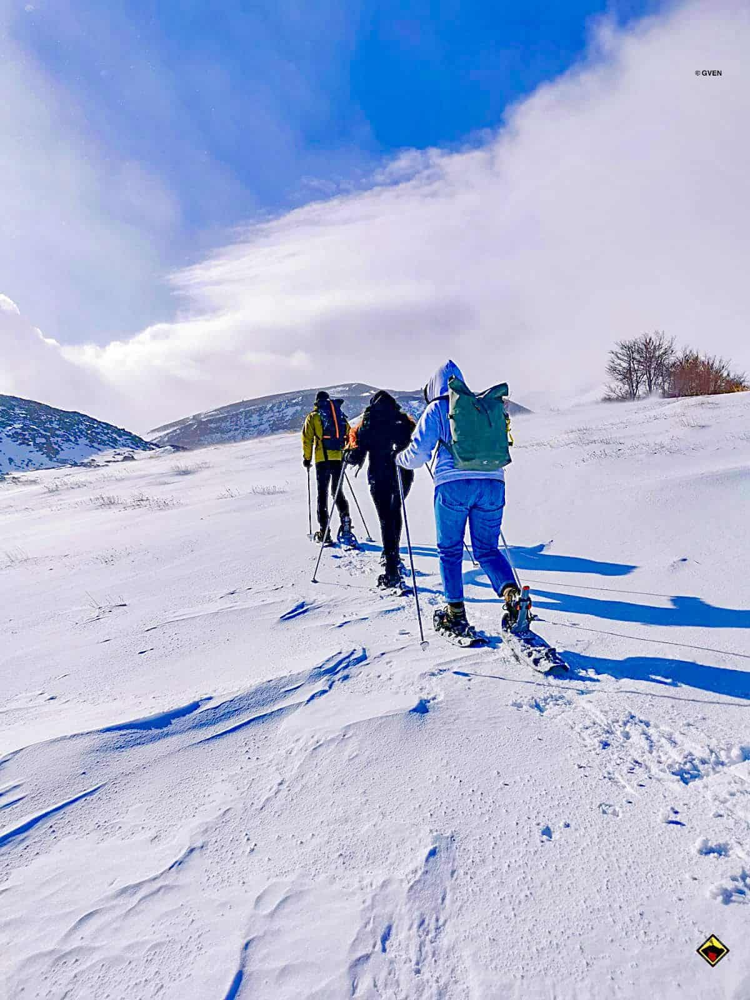
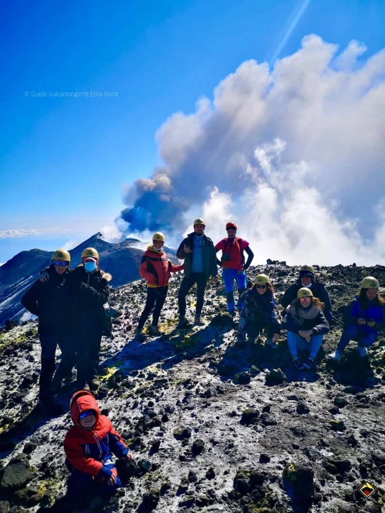
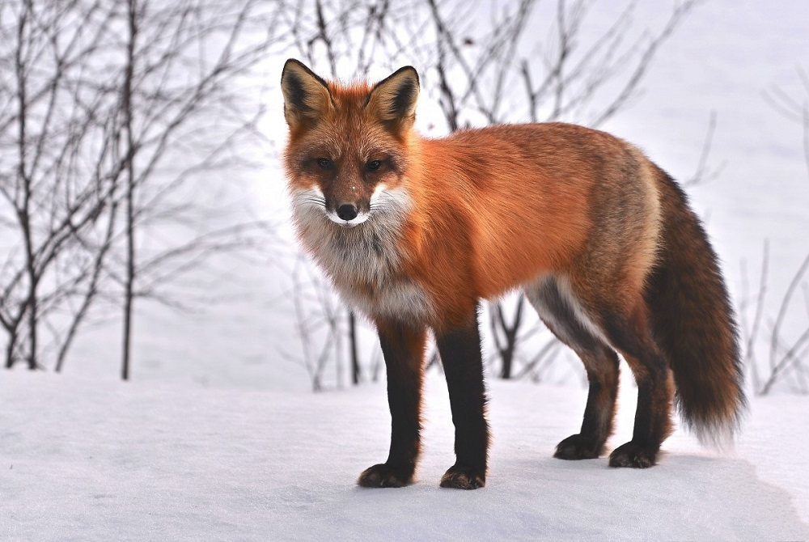

“Un vulcano attivo che incontra boschi rigogliosi:
scopri la potenza e il fascino unico dell’Etna.”

Introduzione
Il Parco dell’Etna si estende intorno al vulcano attivo più alto d’Europa, che domina l’orizzonte della Sicilia orientale con i suoi oltre 3.300 metri di altezza. Istituito nel 1987, questo parco nasce con lo scopo di tutelare un territorio straordinario, in cui la forza della natura si manifesta nelle colate laviche, negli scenari lunari e nei crateri fumanti, ma anche in boschi rigogliosi, vigneti e agrumeti che prosperano sulle pendici vulcaniche grazie alla fertilità del suolo.
Il fascino dell’Etna risiede nel suo contrasto: un ambiente apparentemente ostile che in realtà è culla di biodiversità e di antiche tradizioni enogastronomiche, frutto di un legame millenario tra l’uomo e il vulcano. Visitare il Parco dell’Etna significa immergersi in paesaggi mutevoli, plasmati dall’attività eruttiva, e scoprire come la cultura locale si sia adattata alle sfide e alle opportunità offerte da questo maestoso gigante di fuoco.
Punti di interesse
Tra i luoghi più iconici del Parco spicca il Cratere Centrale, o Gran Cono, raggiungibile attraverso escursioni guidate che portano i visitatori fino a quote elevate, da cui ammirare un panorama unico sul Golfo di Catania. I Crateri Silvestri, situati a circa 1.900 metri di altitudine, offrono una versione più accessibile del paesaggio vulcanico, consentendo anche a chi non ha grande esperienza di trekking di passeggiare lungo i loro bordi e osservare la morfologia creata dalle eruzioni.
Un altro punto di interesse è la Valle del Bove, un’immensa caldera che rappresenta uno degli anfiteatri naturali più grandi e spettacolari di tutto l’arco mediterraneo: le sue pareti ripide e le colate laviche sovrapposte raccontano millenni di storia geologica. Meritano attenzione anche i paesi pedemontani, come Zafferana Etnea, Nicolosi e Linguaglossa, caratterizzati da un’architettura che spesso utilizza pietra lavica, e da tradizioni folkloristiche e culinarie legate ai prodotti della terra. Qui si può scoprire la cultura dell’Etna visitando musei dedicati alle eruzioni passate o degustando piatti tipici come la pasta alla norma, i funghi di Ferla o i mieli aromatizzati.
Attività specifiche
Il trekking è certamente una delle attività più popolari nel Parco, con sentieri di varia difficoltà che consentono di immergersi in boschi di castagni e querce, o di salire fino alle zone sommitali per respirare l’aria rarefatta dei crateri. Gli amanti dell’avventura possono optare per escursioni speleologiche nei tunnel di scorrimento lavico, vere e proprie “gallerie” create dalla lava che un tempo fluiva sotto la superficie. Nella stagione invernale, l’Etna offre anche opportunità di sci alpino e sci di fondo, in un contesto decisamente insolito: non è comune poter sciare guardando il mare all’orizzonte!
Chi preferisce un approccio più confortevole può partecipare a tour in fuoristrada, con guide esperte che illustrano gli aspetti geologici, botanici e storici della zona. Per i gourmet, il territorio è ricchissimo di prodotti tipici: il vino DOC dell’Etna, olio extravergine, frutta secca (come le nocciole di Linguaglossa), pistacchi e un’ampia varietà di formaggi. Sono molto apprezzati anche i percorsi enogastronomici che abbinano degustazioni di vini prodotti su terreni vulcanici a specialità culinarie locali.
 
Cenni su flora e fauna
Nonostante il vulcano possa apparire inospitale, la natura qui è sorprendentemente rigogliosa. Le quote più basse sono caratterizzate da agrumeti, vigneti e uliveti, grazie alla ricchezza del suolo lavico. Salendo, si incontrano boschi di castagni, querce e pini: ad esempio, il bosco di Piano Vetore accoglie escursionisti e picnic estivi, offrendo rifugio a numerose specie animali come la volpe, l’istrice, il gatto selvatico e vari rapaci.
In primavera, le ginestre etnee colorano di giallo le pendici del vulcano, mentre più in alto si susseguono paesaggi quasi lunari, dove solo licheni e piante pioniere resistono al freddo e al vento. Questo gradiente altitudinale crea una varietà di habitat che favorisce la biodiversità, con farfalle, anfibi e persino rettili endemici. La posizione insulare e l’ambiente montano rendono l’Etna un importante laboratorio naturale, studiato da botanici e zoologi per capire i processi di adattamento delle specie.

Informazioni utili
Per visitare il Parco dell’Etna è consigliabile partire dai Centri Visita o dal Parco Avventura Etna, dove si possono ottenere mappe, informazioni sui sentieri e aggiornamenti sull’attività vulcanica. In estate, le temperature possono essere elevate alla base, ma scendono sensibilmente in quota, per cui è fondamentale vestirsi a strati. Anche in inverno, le variazioni climatiche sono notevoli, con la possibilità di trovare neve a pochi chilometri dalla costa. È buona prassi verificare con le autorità locali se ci sono restrizioni dovute a fenomeni eruttivi o rischi sismici, poiché l’Etna è in costante evoluzione geologica.
I trasporti pubblici collegano Catania a alcuni paesi pedemontani, ma per muoversi liberamente tra i diversi punti di accesso al parco può essere utile un’auto, soprattutto per chi desidera visitare più zone in un solo giorno. Infine, va ricordato che la raccolta di campioni di rocce, la realizzazione di fuochi o il disturbo alla fauna selvatica sono vietati, in un’ottica di conservazione e rispetto dell’ecosistema. Chi desidera fare escursioni fino alle quote più alte dovrebbe affidarsi a guide vulcanologiche autorizzate, in grado di garantire sicurezza e di offrire interessanti spunti interpretativi su ciò che si osserva lungo il cammino. Con queste precauzioni, l’esperienza nel Parco dell’Etna diventa un viaggio straordinario all’interno di un paesaggio che non smette mai di evolversi, dimostrando la potenza della natura e la capacità umana di adattarsi, convivendo con un vulcano maestoso e imprevedibile.
Trekking
Viste Guidate